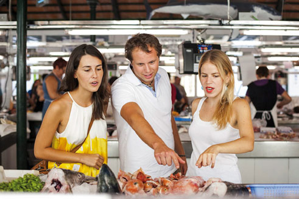

МЕНОРКА великолепная на вкус
 Меноркинцы знают, как распорядиться дарами своей земли и моря и превратить их в настоящие деликатесы. Все культуры, в разные эпохи побывавшие на острове, оставили свой след в местной гастрономии – простой, но в то же время изысканной.
Меноркинцы знают, как распорядиться дарами своей земли и моря и превратить их в настоящие деликатесы. Все культуры, в разные эпохи побывавшие на острове, оставили свой след в местной гастрономии – простой, но в то же время изысканной.
Близость моря определяет основы меноркинской кухни – свежая рыба и морепродукты, из которых по множеству рецептов готовят вкуснейшие блюда, например, фаршированные кальмары или самое известное из них – суп из лобстера. Этот деликатес, признанный в наши дни во всем мире, был когда-то каждодневной рыбацкой похлебкой.
Как у истинных жителей Cредиземноморья, в рационе островитян важное место занимают овощи и зелень. Простые рецепты, служившие некогда для пропитания и выживания, не потеряли своей привлекательности и продолжают переходить из поколения в поколение. Фаршированные, запеченные или тушеные – такие обыденные ингредиенты, как овощи, на деле дают большой простор для творчества. Обязательно попробуйте суп «олиайгу» (oliaigua) – скромный, приготовленный из сезонных овощей и подаваемый со свежим инжиром. В его простоте действительно незабываемый вкус.
С большой нежностью на Менорке разводят барашков, и баранина очень ценится, наряду со свининой, говядиной и даже кроликами. Меноркинские крестьяне достигли настоящего мастерства в изготовлении разного вида колбас – это популярная собрасада (sobrasada), кучот (cuixot), карничуа (carnixua) и бутифарро (botifarró), отлично сочетающиеся с деревенским хлебом, натертым свежими помидорами.
Говоря о гастрономии острова, нельзя не упомянуть о сыре признанной торговой марки Маон-Менорка, уже известной за пределами Средиземного моря. Молоко коров, пасущихся на меноркинских пастбищах, куда ветер приносит морскую соль, придает этому сыру слегка солоноватый отличительный вкус.
Наслаждаясь блюдами местной кухни, попробуйте и вина. Вино на Менорке – результат стараний виноделов, вновь возродивших развитое много веков назад и богатое традициями производство.
Кстати! Знаете ли вы, что самый популярный соус на планете – майонез – родился именно здесь, на Менорке? Не это ли лучшее доказательство изобретательности и искусности поваров острова?